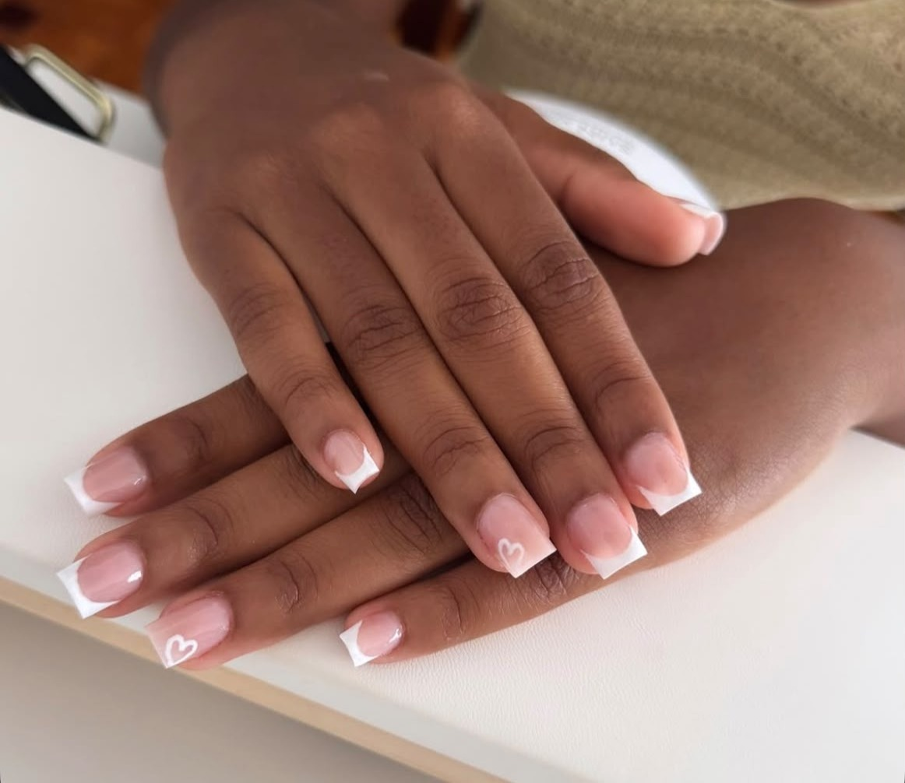
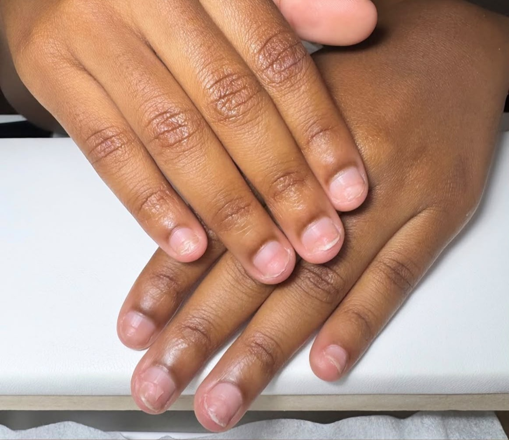
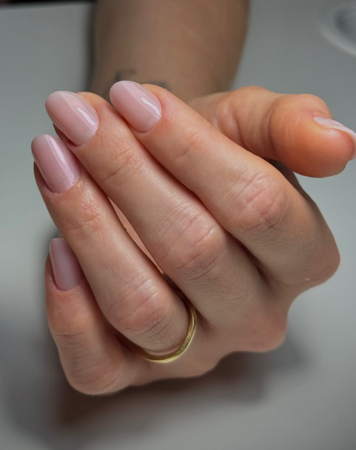
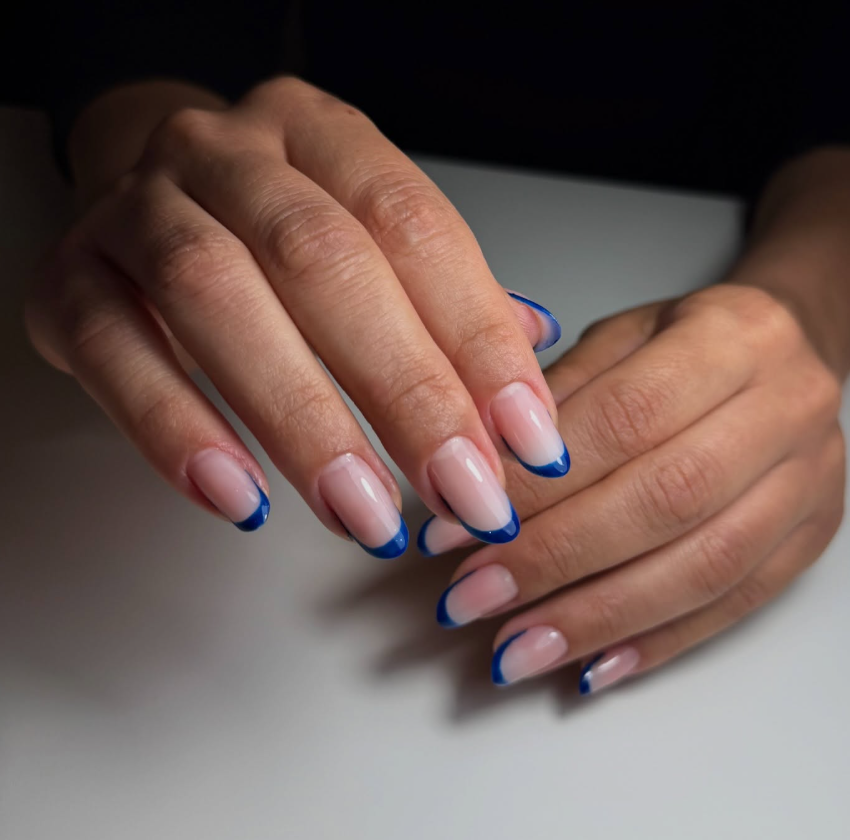
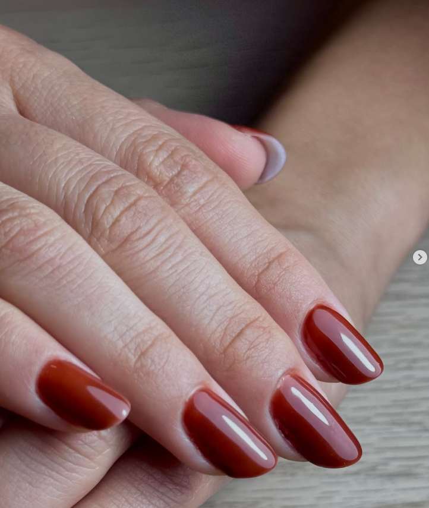
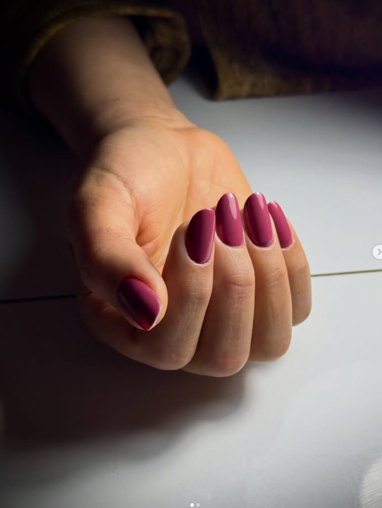
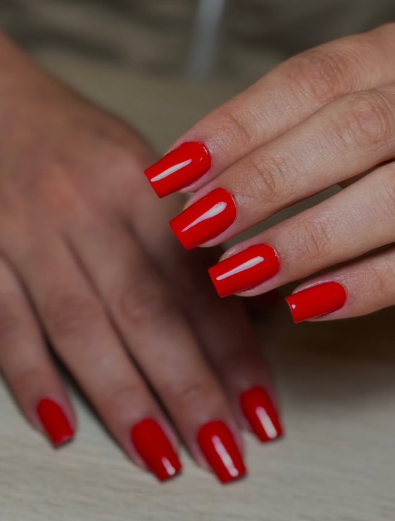

Para praticidade sem alongar
Ideal para quem busca praticidade e uma esmaltação duradoura, mantendo as unhas naturais protegidas.
Duração média: 1h30Nail designer em Campanhã, Porto
Blindagem, banho de gel e molde F1 com atendimento individual, acabamento delicado e foco no cuidado de cada cliente.
.jpeg)
.jpeg)
Fotos de clientes atendidas, sem promessas inventadas.
Alongamento e proteção com delicadeza no formato.
Um horario pensado para fazer com cuidado.
Primeira vez com uma profissional nova?
A Jessie Nails foi pensada para quem quer confiar o próprio cuidado a uma profissional atenta: desde a avaliação do formato até a escolha da técnica mais indicada para o seu momento.
Em vez de uma experiência apressada, a proposta é um atendimento acolhedor, com acabamento limpo e resultado que respeita a naturalidade das mãos.
Experiência interativa
Uma forma simples de perceber a diferença entre a unha natural e o acabamento final, sem perder a delicadeza do antes e depois.


Serviços
Ideal para quem busca praticidade e uma esmaltação duradoura, mantendo as unhas naturais protegidas.
Duração média: 1h30Uma camada de estrutura e brilho para fortalecer as unhas e prolongar o acabamento com aspecto delicado.
Duração média: 2hTécnica indicada para clientes que desejam um alongamento com aspecto natural e boa resistência.
Duração média: 3hTrabalhos recentes






Veja mais no Instagram
O Instagram reúne publicações, retornos, transformações e detalhes de acabamento para ajudar na decisão antes de marcar.